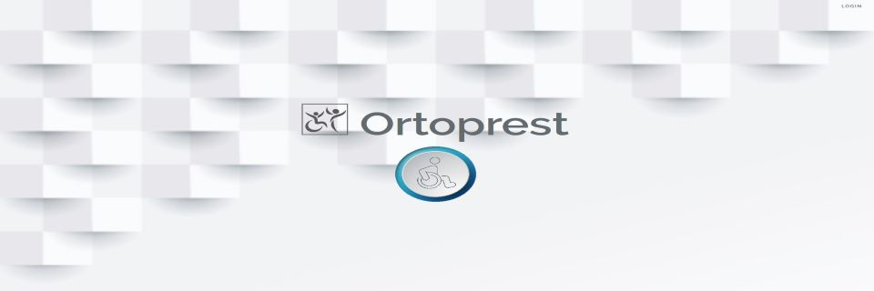
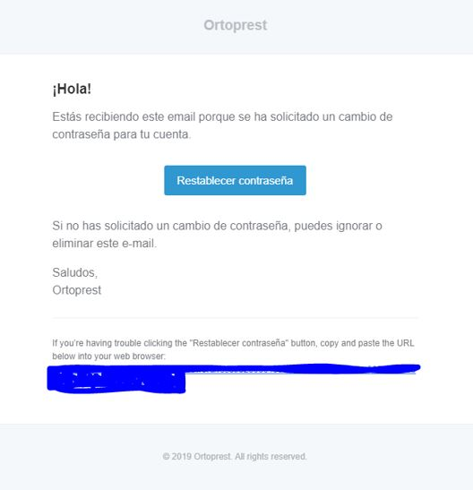
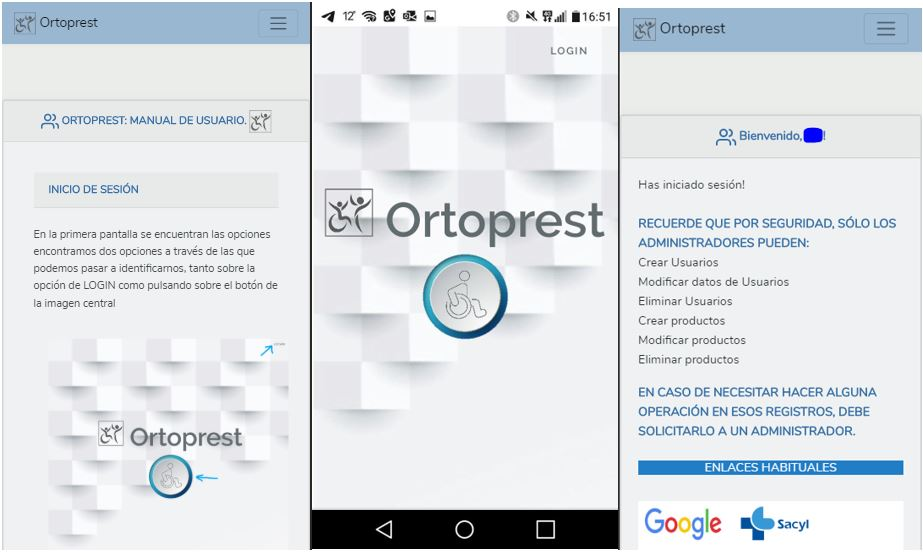

ORTOPREST
Aplicación web para la gestión de prestaciones ortoprotésicas.
Proyecto Final F.P. Superior Desarrollo de Aplicaciones Web
Realizado con el framework de PHP Laravel, permite la autenticación segura de administradores y usuarios, así como la recuperación de contraseña, con envío seguro al correo indicado mediante hash.
Mantiene privilegios de seguridad que evitan el uso indebido de partes sensibles por los usuarios sin rol de administrador.
Permite el manejo total de datos tanto de usuarios como productos, listándo todo de forma muy visual y cómoda para el manejo diario de los mismos y con una mínima formación.
Por supuesto, es accesible desde cualquier tipo de dispositivo, para mejorar la eficacia y no depender de un equipo determinado.
Al tener restricciones de acceso, no tiene parte pública, pero puedes ver una pequeña demo del mismo a continuación.